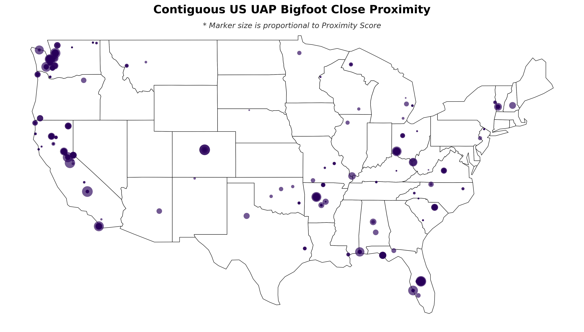
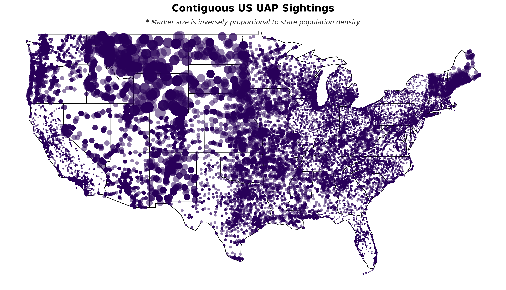
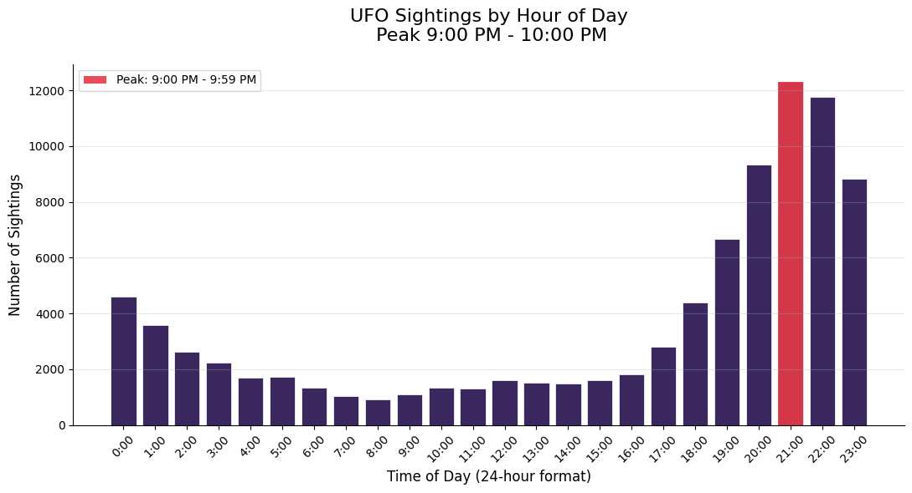
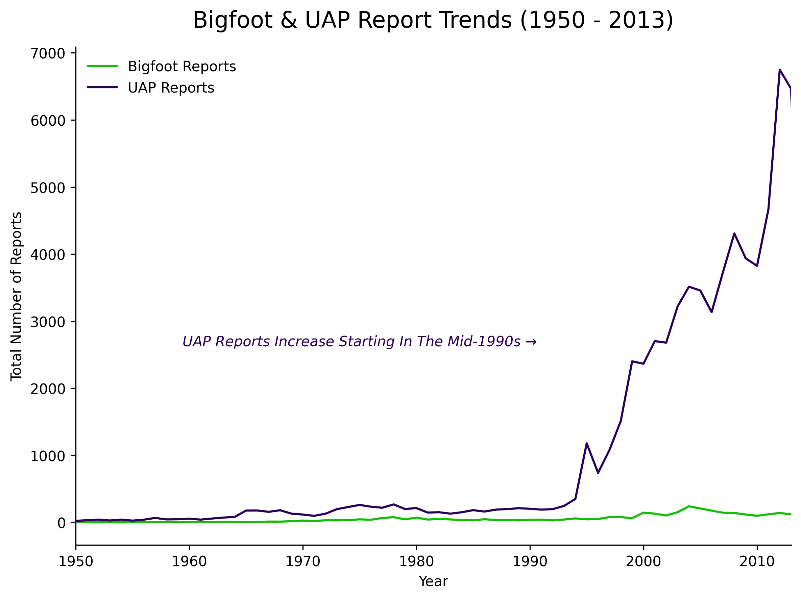
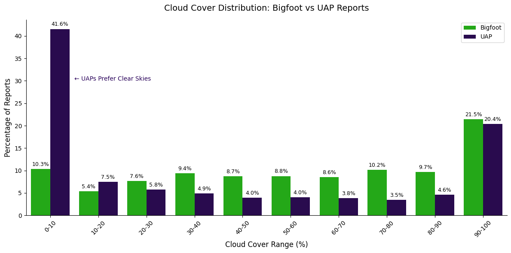
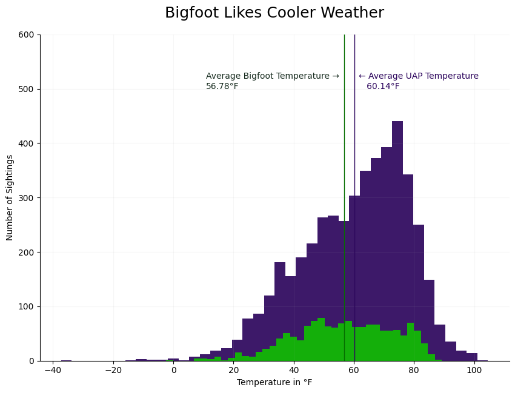
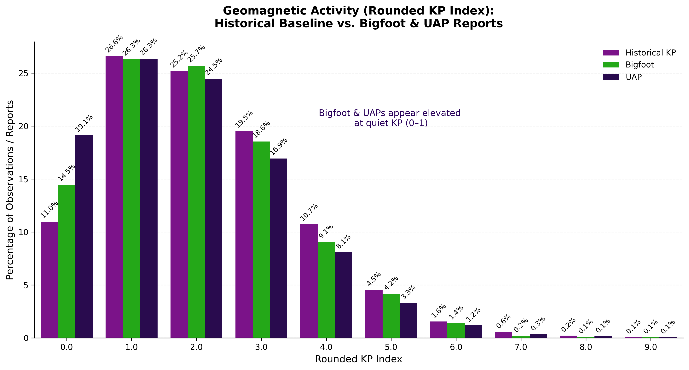
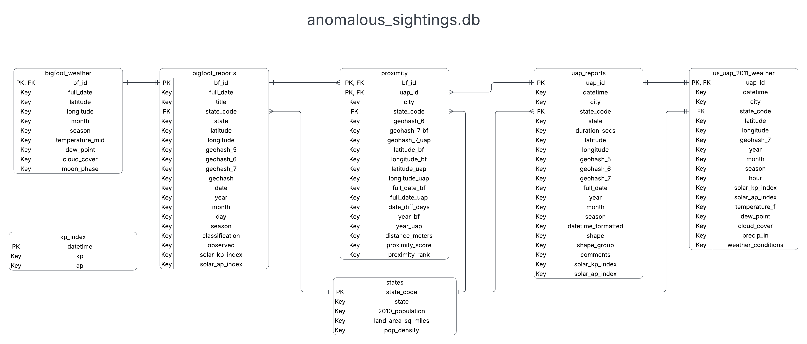

Project Overview
This project investigates potential correlations between Bigfoot and UFO (UAP) sightings across the United States. The primary question is whether there is a meaningful relationship in time and/or location, or whether geographic clusters appear when the two report streams are compared.
Secondary goals include shared environmental conditions — season, weather, and geomagnetic Kp index — and practical notes for independent investigators. Patterns here are observational. They do not establish a causal link between the two phenomena.
Stack: Python, Jupyter, Pandas, SQLite, Matplotlib, Seaborn, GeoPandas, Folium, Open-Meteo, and GFZ Kp index data.
View the repository · Open the main notebook · Interactive dashboard
Key Findings
Proximity clusters
Reports that land close together in space show concentrations in the Pacific Northwest (strongest), Northern California, the Ohio Valley, Central Arkansas, and Florida.

proximity table.Location
Bigfoot reports concentrate in forested regions, especially the West Coast and Eastern U.S., with a notable gap across the Central Plains and western deserts. UAP reports are more even nationwide, with clusters in the Pacific Northwest, Montana, and Vermont.

Timing
- UAP sightings peak around 9:00–10:00 p.m.
- Both Bigfoot and UAP reports peak in summer and early fall (roughly June–November).
- UAP report volume rises sharply from the mid-1990s.
- Bigfoot reports increase more gradually across the dataset years.


Environmental conditions
- Cloud cover: a large share of UAP reports occur under clear skies (0–10%). Bigfoot reports are more even across cloud-cover ranges.
- Temperature: averages are similar; Bigfoot reports trend slightly cooler (≈56.8 °F vs. ≈60.1 °F for UAP).
- Kp index: both report types show a higher share of events during quiet geomagnetic conditions (Kp 0–1) than the historical baseline.



Maps & Charts
Static outputs from the analysis notebook. Click any figure to open the full image.
Methods
Raw NUFORC UAP reports, BFRO Bigfoot reports, and U.S. Census population data are cleaned in Pandas, enriched with geohashes, haversine distances, Open-Meteo weather (2011 UAP sample), and GFZ Kp index values, then loaded into SQLite.
bigfoot_reports,uap_reports,statesproximity(composite key:bf_id+uap_id)kp_index, weather tables for Bigfoot and 2011 UAP reports

Sources: NUFORC, BFRO, U.S. Census, GFZ Kp Index, Open-Meteo.
Interactive front end
This page is the static project face: narrative, findings, and saved maps. The next step is a Streamlit dashboard for year, state, distance, and weather filters on the same SQLite tables.
Run it locally
Clone, create a venv, install requirements.txt, then Run All on notebooks/anomalous_sightings_analysis.ipynb. The notebook rebuilds processed data, the SQLite database, and the files in plots/.